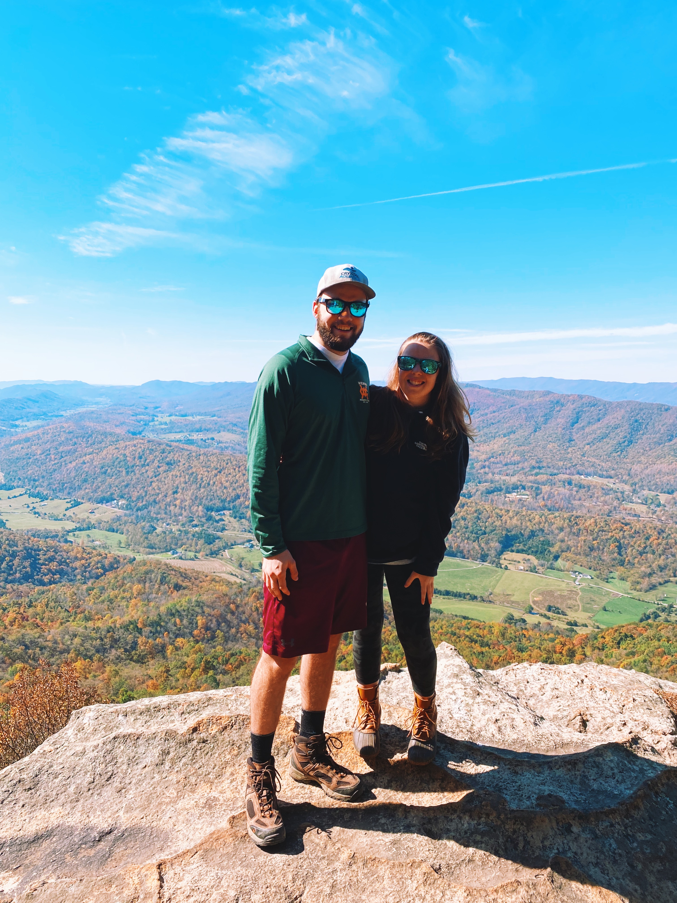
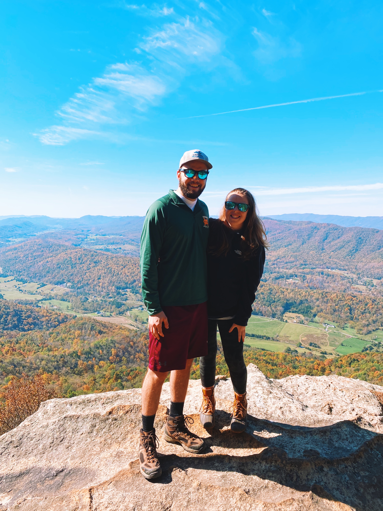

About Me
My name is Tate Wilhelm and I'm a programmer and photographer from Vienna, Virginia.
I am passionate creativity, whether I'm working on a programming project, woodworking,
making videos or taking pictures, or building a dope castle in Minecraft, I can usually be
found creating something. I'm currently living in Blacksburg, VA and am a senior at Virginia
Tech majoring in Business Information Technology with a minor in Computer Science.
After graduation, I'll be moving back to NoVA, where I'll join GEICO as a Software Engineer.
I throughly enjoy just about any outdoor activity, but I love snow skiing most of all.
When I can't shred the gnar (which is most of the time unfortunately) I love exploring the
great hiking trails in the New River Valley, off-roading in my family's Jeeps, playing catch,
or just taking a walk.
 

My Links
I post way more on social than I do on this site, so follow me on these for more pics, projects, and my thoughts on sports and the world. (Yes, I did misspell my last name in my twitter handle and didn't notice for years, now I've just kept it.)
What's on this site?
I created this website for fun as a place to showcase some of my work, as well as try my hand at developing and hosting my own website from scratch. You'll find my personal programming projects, some of my favorite photos and videos, and anything else I feel like adding.